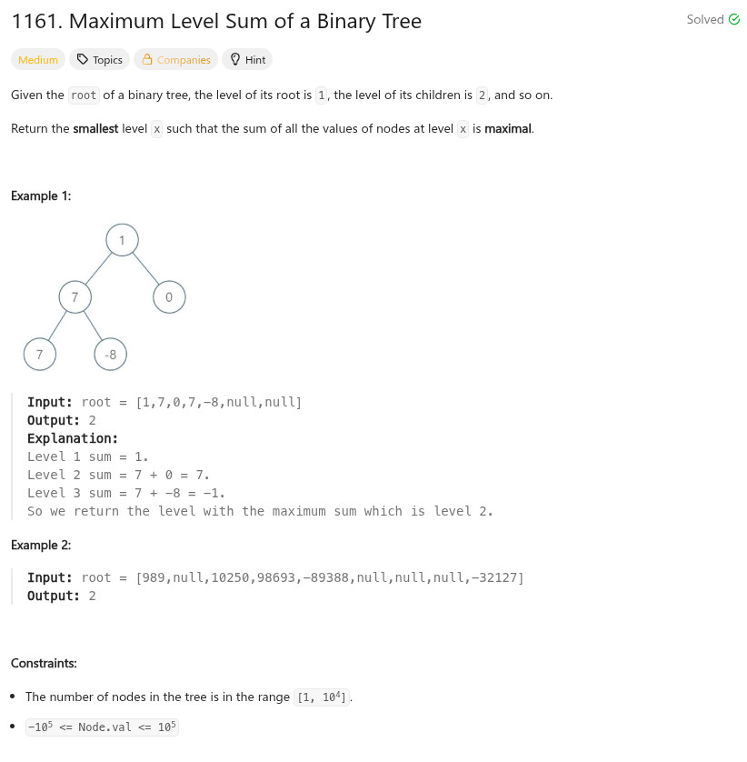

參考資訊：
https://www.cnblogs.com/grandyang/p/15022629.html
題目：

/**
* Definition for a binary tree node.
* struct TreeNode {
* int val;
* struct TreeNode *left;
* struct TreeNode *right;
* };
*/
int maxLevelSum(struct TreeNode* root)
{
int r = 0;
int st = 0;
int sp = 0;
int max = 0;
int level = 0;
struct TreeNode *q[10000] = { 0 };
if (!root) {
return 0;
}
q[sp++] = root;
max = root->val;
while (st < sp) {
int i = 0;
int len = sp;
int sum = 0;
for (i = st; i < len; i++) {
sum += q[i]->val;
st += 1;
if (q[i]->left) {
q[sp++] = q[i]->left;
}
if (q[i]->right) {
q[sp++] = q[i]->right;
}
}
if (sum > max) {
r = level;
max = sum;
}
level += 1;
}
return r + 1;
}